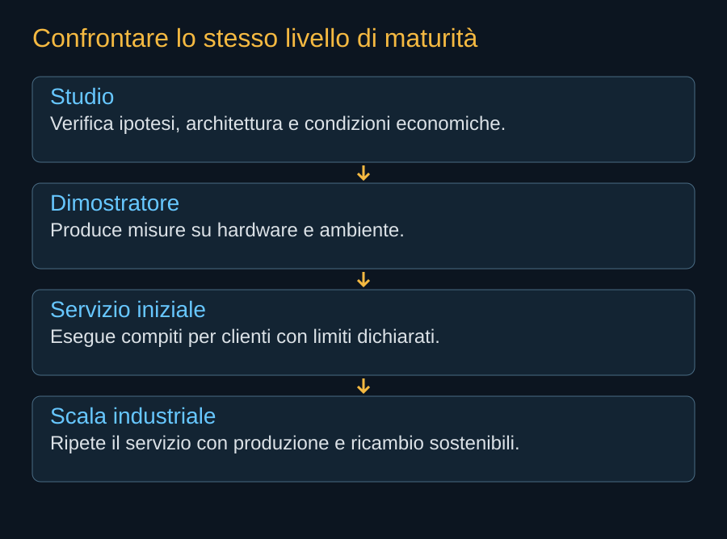
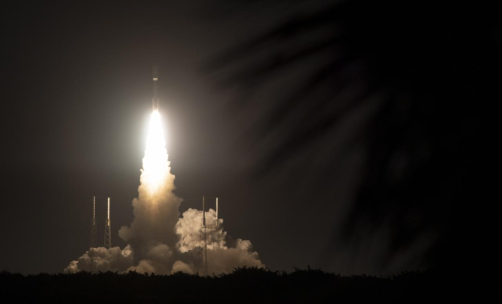

La corsa al calcolo orbitale comprende progetti che non stanno tentando esattamente la stessa cosa. Alcuni partono da un piccolo payload, altri da una rete di satelliti vicini, altri ancora da infrastrutture assemblate. Confrontarli richiede conservare architettura e livello di maturità. Una presentazione non è una missione, e una missione riuscita non è ancora un mercato sostenuto.
Starcloud: imparare da un computer che vola
Starcloud-1 venne lanciato nel novembre 2025 con una GPU NVIDIA H100. Il costruttore rivendica prove successive di modelli e addestramento, fra cui NanoGPT. La pagina aziendale contiene anche formulazioni non perfettamente coerenti fra Gemini e il riferimento a Gemma nelle testimonianze: qui conserviamo il risultato generale dichiarato, evitando di trasformare una frase promozionale in una specifica indipendentemente verificata.
La prova è importante perché porta hardware e carichi informatici nell’ambiente reale. Non dimostra l’economia di una grande costellazione. La dimensione del modello, il tempo della prova, l’energia disponibile e l’affidabilità nel lungo periodo determinano ciò che si può imparare. Un esperimento piccolo può dare risposte molto utili senza essere il prototipo in scala di ogni sistema futuro.
Google Suncatcher: processori e collegamenti
Google presentò Project Suncatcher il 4 novembre 2025 come ricerca su satelliti alimentati dal Sole e dotati di TPU. Il 1 ottobre 2026 annunciò il lancio di un prototipo realizzato con Planet su Transporter-18, il contatto e l’avvio di esperimenti. Questa edizione include l’aggiornamento: non lascia il primo hardware soltanto dentro il calendario iniziale.
Il lavoro di ricerca riguarda anche il modo di far comunicare le unità. Una rete di satelliti relativamente vicini può cercare interconnessioni utili a carichi distribuiti, ma impone controllo del volo e geometrie differenti da una grande flotta dispersa. Il confronto con Starmind deve partire da questi compromessi, non dalla sola somma della potenza prevista.


ASCEND: il percorso europeo della fattibilità
Il consorzio ASCEND, guidato da Thales Alenia Space nell’ambito di Horizon Europe, pubblicò nel giugno 2024 risultati di uno studio sulle infrastrutture informatiche in orbita. L’analisi collegava gli eventuali benefici ambientali a condizioni sul trasporto e sul ciclo di vita. Non documentava un centro di calcolo già operativo.
Una struttura assemblata e mantenuta può avere economie e rischi diversi da satelliti indipendenti da sostituire. Richiede robotica, logistica e interfacce comuni. Può conservare parte dell’infrastruttura durante il ricambio, ma introduce dipendenze che il modello distribuito tenta di ridurre. La scelta fra le due architetture non si decide soltanto guardando il rendering.


Il trasporto può servire anche il concorrente
SpaceX può essere fornitore di lancio per un progetto che compete con una propria attività. Il prototipo Suncatcher rende concreta questa relazione. La disponibilità di trasporto facilita gli esperimenti di molte imprese; il valore del servizio di calcolo dipenderà dalle capacità che ciascuna costruisce dopo il rilascio.
Questa pluralità è utile anche per la conoscenza. Prove su processori, circuiti e orbite differenti possono chiarire quali limiti siano generali e quali dipendano da una scelta di progetto. Il successo di un dimostratore concorrente non certifica AI1, ma può rendere più informata la valutazione dell’intero settore.
Il confronto rimane datato. Nei prossimi aggiornamenti conteranno risultati pubblici: carichi eseguiti, ore di funzionamento, errori, collegamenti e clienti. La scala promessa è una parte dell’ambizione; la maturità si misura per capacità specifiche e documentate.
Fonti pubbliche e tracce
- Starcloud, Starcloud-1. Il costruttore documenta il lancio del novembre 2025 e rivendica prove di calcolo successive. Nessuna equivalenza con una costellazione commerciale su larga scala.
- Google, nascita di Project Suncatcher. 4 novembre 2025: ricerca su reti di satelliti con TPU. Il programma iniziale va distinto dagli aggiornamenti successivi.
- Google, prototipo Suncatcher in orbita. 1 ottobre 2026: lancio con Transporter-18, contatto e avvio della raccolta dei dati. Annuncio del responsabile del programma, non prova di sostenibilità economica.
- Thales Alenia Space, risultati dello studio ASCEND. 27 giugno 2024: studio europeo di fattibilità e condizioni ambientali. Non una centrale di calcolo già operativa.
- NASA, Laser Communications Relay Demonstration. Storia e operazioni del dimostratore ottico LCRD; la rete Starmind ha un’architettura differente.